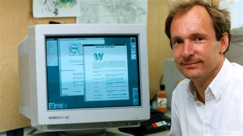
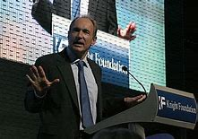

Sir Timothy John Berners-Lee (born 8 June 1955), also known as TimBL, is an English computer scientist best known as the inventor of the World Wide Web, the HTML markup language, the URL system, and HTTP. He is a professorial research fellow at the University of Oxford and a professor emeritus at the Massachusetts Institute of Technology (MIT).Berners-Lee proposed an information management system on 12 March 1989 and implemented the first successful communication between a Hypertext Transfer Protocol (HTTP) client and server via the Internet in mid-November. He devised and implemented the first Web browser and Web server and helped foster the Web's subsequent explosive development. He is the founder and emeritus director of the World Wide Web Consortium (W3C), which oversees the continued development of the Web. He co-founded (with Rosemary Leith) the World Wide Web Foundation.

He received the 2016 Turing Award "for inventing the World Wide Web, the first web browser, and the fundamental protocols and algorithms allowing the Web to scale". He was named in Time magazine's list of the 100 Most Important People of the 20th century and has received a number of other accolades for his invention.
In April 2009, he was elected as Foreign Associate of the National Academy of Sciences.Berners-Lee was previously a senior researcher and holder of the 3Com founder's chair at the MIT Computer Science and Artificial Intelligence Laboratory (CSAIL). He is a director of the Web Science Research Initiative (WSRI) and a member of the advisory board of the MIT Center for Collective Intelligence. In 2011, he was named as a member of the board of trustees of the Ford Foundation. He is a founder and president of the Open Data Institute and is currently an advisor at social network MeWe. In 2004, Berners-Lee was knighted by Queen Elizabeth II for his pioneering work.